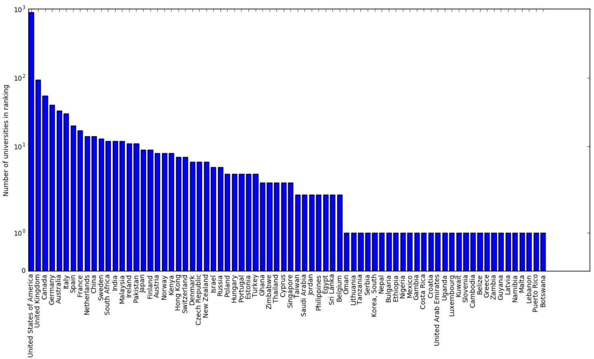

Global ranking
Filter
About
Analysis
Rankings
We have built an alternative university ranking based on universities' visibility in Google's search results. This gives us an idea of which universities have a strong presence in search engines and which don't. We then compare this ranking to the Shanghai Ranking to see how well we can evaluate a university's reputation simply by looking at how present it is in search engine results.
One of Google's key rankings criteria (for determining what position a website is displayed in on the search results page) is looking at how many other sites link to it (page rank algorithm). Similarly, one of the keyword ranking criteria for universities is looking at how many times their publications have been cited. The original inspiration for this project came from drawing the parallel between linking to website and citing a publication.
Feel feel to browse our rankings. You can switch between map mode and rankings mode by hovering over the button at the bottom. You can filter by degree type and subject by using the filter button, and you can filter by country by clicking on a country. Enjoy your visit :)
For more details on the methodology used, see the following notebook.
The overlap between the first hundred universities of the Shanghai rankings and of our ranking contains 44 universities. In general the two rankings are reasonably similar. For example, the entire top 5 of the Shanghai ranking is present in our ranking, where the University of California and Stanford University even appear in the top 5. We think it is interesting that we get similar results to the Shanghai ranking simply by looking which universities are the most represented in Google's search results.
The figure below shows the difference in rankings between the universities present in both rankings.
Our rankings are heavily domainated by English speaking universities. On the one hand, this could have been expected because all of the search queries we use are in English. On the other hand though, many universities have websites in English and so should not be penalised so much in theory. However, as we were using google.com , it is possible that American websites were inherently favoured by the search algorithm.
Nevertheless a grand total of 74 countries make it into our rankings. The figure below shows the breakdown country by country (N.B. We use a logarithmic scale). 
Global ranking